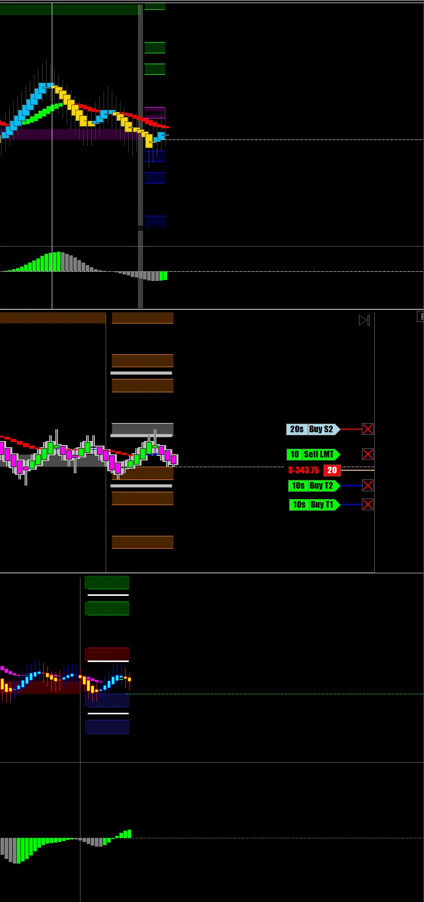
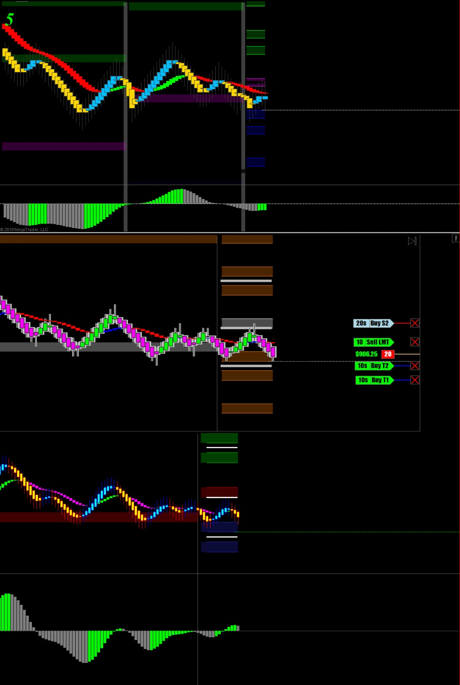
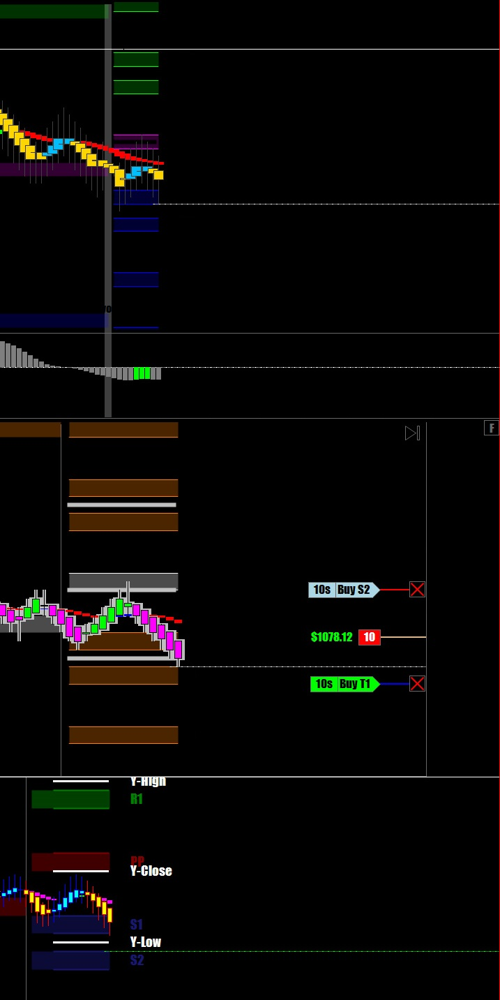
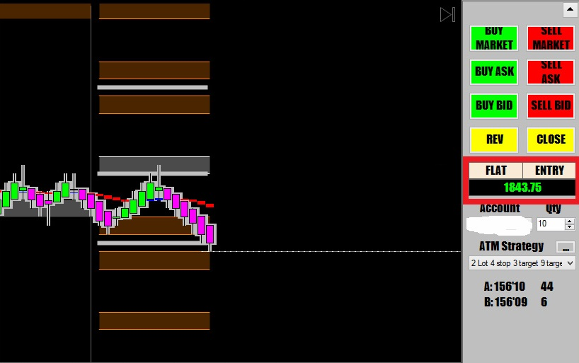

해외선물 - [UB] 장외마켓 매매
President's day 공휴일이라 휴장했다가 방금전 오후 3시에 장외마켓이 개장
어디를 보나 당장은 하락세
곧바로 short side로 진입
10계약씩 1틱 간격으로 분할주문 넣었는데 20계약 체결 됨



기계적매매의 기본은
하방으로 지를것인지 상향으로 갈것인지를 결정한 후 (언제나 추세방향대로만 매매)
그쪽 방향으로 봉 색깔 바뀌면 무조건 진입(특히 중요 지지(저항)닿고 색깔 바뀌면 최고)
일단 3틱 정도에서 절반 수익 실현해놓고 나머지는 따라가는 기법
이런식으로 매매하면 스트레스도 적고 손절은 짧고 수익은 크게 날 수 있음
BUT --매매선(기준선)이 옆으로 드러눕는 ,각도가 없는 횡보중인 상태에서는 매매금지
